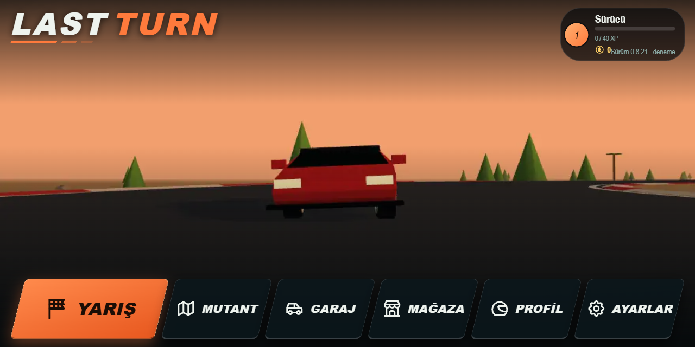
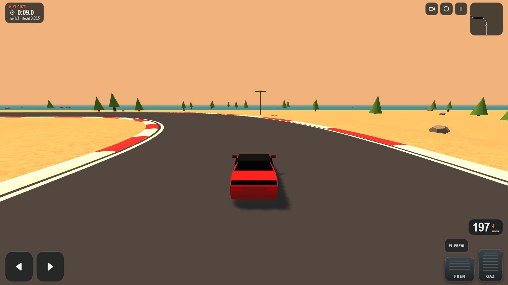

Last Turn · Windows menü ve HUD taslakları
İlk üç taslak (A Pist duvarı, B Vitrin, C Telemetri) telefona göre çizilmişti ve eski arayüzden fazla uzaklaşıyordu. Buradaki üç yeni yön Windows ekranı (16:9) içindir. Dokunmatik tuşlar kalkar, eski web arayüzünün kimliği korunur. Örnek görüntülerin arka planı web sürümünün kendi sahnesidir; yalnız ölçek içindir, yarı gerçekçi araç ve pistler sonra gelecek.
Bugünkü web arayüzü (çıkış noktası)


Korunacak kimlik
- Eğik (paralelkenar) tuşlar, italik kalın büyük harf yazı, LAST TURN logosu ve altındaki kesik çizgiler.
- Koyu cam paneller, tek turuncu vurgu (#ff7a3c), uyarılar sarı. Emoji ve gerçek marka logosu yok.
- HUD kuralları: aracın durduğu alt orta ve yolun ortası boş, her bilgi ekranda bir kez, hız ile devir birlikte gösterilmez.
İncelenen yarış oyunları ve alınan ilkeler
Tasarımları kopyalamadım; her birinden bir yerleşim ilkesi aldım. Kaynaklar sayfanın sonunda.
Hız sağ altta büyük beyaz rakam, vites küçük ve renkli; harita sol altta. Az öğe, hızlı okunur. Oyuncuların şikâyeti: göstergeler büyük, ince ibre zor seçiliyor.
Sıra ve tur bilgisi bir köşede toplanır, tur ve sektör süreleri en iyi süreyle karşılaştırılır. Şikâyet: ekranda çok bilgi var, sade düzende harita kapanmalı.
Yayın tarzı zaman sütunu, renkli başlık şeridi, artı/eksi fark. Ders: benzer renkteki iki gösterge birbirine yapışınca tek öğe gibi okunuyor.
Hot Pursuit'te harita sol alt, hız ve vites sağ alt. Kısa ve amaçlı animasyonlar, simge yerine yazı. Oyuncuyu dünyadan koparmayan az öğe.
Panelsiz sade düzen, süre ve kontrol noktası farkı ortada. Topluluk eklentileri süreyi araçtan uzağa taşıyor, fazlasını gizlenebilir yapıyor.
Assetto Corsa, ACC ve AMS2 oyuncuları öğelerin yerini, boyutunu ve saydamlığını seçmek istiyor. Geniş ekranda HUD kenara kaçmamalı.
Üç taslakta ortak PC değişiklikleri
- Yön, gaz, fren ve el freni tuşları kalkar. Sürüş klavyeyle olur: W A S D ya da oklar, el freni Boşluk, R yeniden başlat, Esc duraklat. Bu tuşlar Unity'de zaten tanımlı.
- Sağ üstteki kamera, yeniden başlat ve duraklat simgeleri kalkar, yerlerini kısayollar alır. Kamera için V öneriyorum, çünkü C şu an el freni.
- Alt köşeler artık başparmak için ayrılmıyor, hız ve harita buraya inebilir. Alt orta yine aracındır.
- Menüde fare ve klavye birlikte çalışır: üzerine gelince tuş belirginleşir, oklar ve Enter seçer, Esc geri gider, her tuşun numara kısayolu var. Altta küçük tuş ipuçları durur.
- Temel çözünürlük 1920×1080. Ekranın %2–3'ü kenar boşluğu, çentik kuralları kalkar. Arayüz ölçeği Ayarlar'dan değişebilir.
DKöşe: eski düzen, PC'ye taşınmış
Eskiye en yakın yön. Menü aynı kalır, yalnız tuşlar inceltilir ve klavye/fare durumu eklenir. HUD'da Forza ve NFS'teki gibi harita sol alta, hız sağ alta iner; üst köşelerde yalnız süre kalır. Oyuncu bildiği ekranı görür.
EYayın şeridi: geniş ekranı kullanan menü, zaman sütunu
Eğik tuşlar sol tarafa dikey liste olarak dizilir. Sağdaki ayrıntı kartı seçili tuşun içeriğini önceden gösterir, araç ortada kalır. HUD'da GT ve F1'deki gibi süreler sol üstte tek sütunda toplanır, hedefe göre fark üst ortada durur. Bilgiyi seven için.
FSade: sekmeli menü, panelsiz HUD
PC oyunlarındaki sekmeli ana ekran. Üst şeritte eğik sekmeler var, Q ve E ile geçilir; içerik altta kartlar olarak durur. HUD Trackmania ve eski "Yazı" seçeneği gibi panelsizdir: süre üst ortada, hız sağ altta, yazıların yalnız gölgesi var. Yol en çok bu yönde görünür.
Karşılaştırma
| Yön | Eskiye yakınlık | Menü | HUD | Uygun olduğu oyuncu |
|---|---|---|---|---|
| D Köşe | En yakın | Alt sırada eğik tuşlar (bugünkü gibi) | Süre sol üst, harita sol alt, hız sağ alt | Bildiği ekranı isteyen |
| E Yayın şeridi | Orta | Solda dikey liste, sağda ayrıntı kartı | Zaman sütunu, üstte fark, harita sağ üst | Süre ve rekor kovalayan |
| F Sade | Renk ve yazı aynı, düzen yeni | Üstte sekmeler, altta kartlar | Panelsiz, süre üst orta | Yolu ve aracı görmek isteyen |
Karıştırmak mümkün; örneğin menüde F'nin sekmeleri, HUD'da D'nin köşe düzeni. Seçilen yön Ayarlar'daki "Göstergeler" seçimiyle de uyumlu kalır (Panel/Yazı, harita biçimi).
Kaynaklar
- Racing HUD Layout (Forza düzeni üzerine)
- Game Analysis: Forza Horizon 4
- FH5 devir ibresi okunurluğu (Forza forumu)
- HUD öğesi boyut ve yer ayarı isteği (Forza forumu)
- Gran Turismo 7 kılavuzu: yarış ekranı
- HUD caveats (GTPlanet)
- F1 2020 HUD rehberi
- F1 23 ERS/DRS okunurluk şikâyeti (EA forumu)
- HUDs and GUIs: E3 2015 (Need for Speed)
- Trackmania: Unintrusive Checkpoint Timer
- Assetto Corsa Competizione HUD tartışması